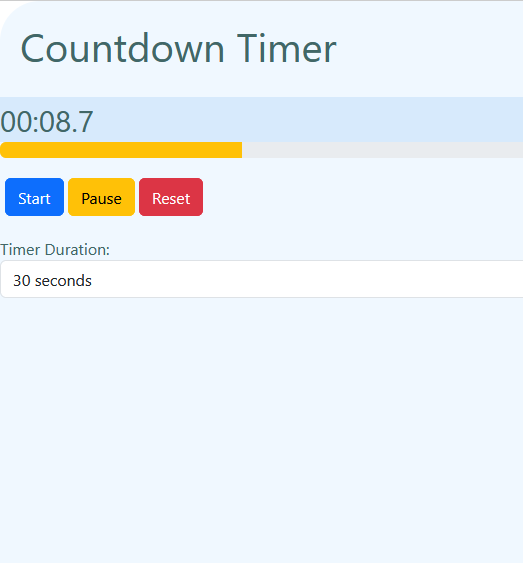

1
SIMPLY SEVEN
Breaking News: Major Cybersecurity Breach Exposes User Data
A recent breach at a major tech company has exposed millions of users' personal data. This news is sending shockwaves across the tech industry, prompting security experts to reassess online safety protocols. Read on to find out what went wrong and how you can protect your data online.
Read Full ArticleLatest Articles

Creating a Simple Calculator with HTML, CSS, and JavaScript
Learn how to build a functional calculator using basic web development technologies.
A calculator is a basic yet essential tool that demonstrates the power of programming. It supports addition, subtraction, multiplication, and division, showcasing DOM manipulation and event handling.
Category: Projects

Building a Classic Snake Game with JavaScript
Dive into the world of game development by recreating the classic Snake Game.
This project includes features like keyboard controls, collision detection, and score tracking, built using HTML Canvas and JavaScript. It demonstrates core game logic and canvas rendering techniques.
Category: Projects

Building an Interactive Timer and Smooth Animation Control System
Explore an engaging project that combines real-time timers with smooth animations using JavaScript, jQuery, Bootstrap, and CSS.
This project includes a dynamic timer with selectable durations (30s, 60s, 90s), a visually interactive progress bar, and animated dots that move smoothly across the screen with vertical oscillation.
Features include start, pause, and stop controls, leveraging JavaScript's requestAnimationFrame for fluid animations. CSS plays a critical role in styling the components, including the vibrant dot animations, hover effects on buttons, and a visually appealing blurred background. The combination of HTML, CSS, Bootstrap, and JavaScript showcases a well-rounded approach to interactive front-end development.
Category: Projects
Hungry Hero - Building a Fun and Interactive JavaScript Game
Learn how to build a fun and interactive JavaScript game, Hungry Hero, where players collect food and avoid enemies in a dynamic maze environment.
Creating a game like Hungry Hero is a fantastic way to sharpen your JavaScript skills. This project introduces concepts like event listeners, collision detection, and dynamic DOM updates. Players navigate a maze, collecting food to boost health while dodging enemies that make the game progressively challenging. With three difficulty levels—easy, medium, and hard—Hungry Hero tests your ability to manage state and interactions effectively. The visual elements and animations bring the game to life, making it an engaging project for any aspiring game developer.
Category: JavaScript Games

Step-by-Step Guide to Creating a Versatile and Animated JavaScript Timer
A step-by-step guide to creating a versatile JavaScript timer with animated visuals and custom formats.
A JavaScript timer is a fundamental yet powerful tool for web development. In this article, we explore how to build a timer with a clean 00:00:00 format and smooth animations using requestAnimationFrame. This timer can be extended for use in games, productivity apps, or countdowns. You'll learn how to integrate visual progress bars, manage precise time intervals, and keep your code efficient. Whether you’re new to JavaScript or looking for a practical project, a timer is a rewarding feature to develop and customize.
Category: JavaScript Essentials
Designing a Custom JavaScript Splash Screen for Enhanced User Experience
Add polish to your projects with a JavaScript splash screen that captivates users before the main content loads.
A splash screen is a great way to set the tone for your web application or game. In this tutorial, we build a custom JavaScript splash screen that fades seamlessly into the main content. You’ll learn how to use CSS transitions and JavaScript to control the display timing and animations. This project covers essential techniques such as managing setTimeout, adding brand visuals, and improving user experience with smooth loading indicators. Perfect for giving your projects that professional edge.
Category: JavaScript UI/UX